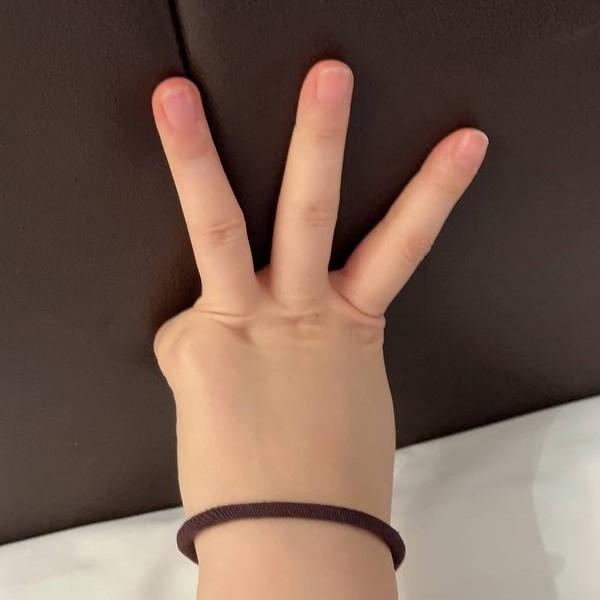

实践记录2022-023
Form of Spanking Execution / 实践活动记录 2022-023
| Spanker/执行人 | 1552919196 | Spankee/被执行人 | 35******33 |
| Spanking Time/执行时间 | Nov 17th 2022 | Spankee's Height/被执行人身高 | 167cm |
| Spanking Place/执行地点 | 汉庭优佳（北京亚运村鸟巢店） | Spankee's Weight/被执行人体重 | 55kg |
| Spankee's Butt Type/被执行人臀部类型 | 脂肪型 | ||
| Package Selection/项目选择 | D |
A. Discipline & Punishment/管教惩罚
B. Fascinating Games/快乐游戏 C. Role Play/角色扮演 D. Greenhand Guide/新手上路 |
|
| Tools/工具 | 如图片区所示 | ||
| Notes/注意事项 | 酌情轻一点 | ||
| Spanker’s Review/执行人评价 | 这次的下单人是一位长相酷似香港女星周海媚的姑娘。她是西北人，但令人称奇的却是有着羊脂玉一般温润的皮肤。用鸡腿拍热身过后，本来绵软的屁股就变得饱满且紧致起来，晶莹剔透的表皮下面遍布红痧，戳一戳弹性十足，像两只沙瓤西瓜做的大果冻。
第一轮允许她自选工具的使用顺序。她选的顺序是这样的：三趾皮板➡️皮板子➡️皮条➡️竹戒尺➡️鸡翅木板➡️榉木板➡️藤条➡️玉竹➡️白树脂棍➡️黑树脂棍。果然是个新人，把看上去很疼的都留到了后面，可谁能想到她对板子之类宽的工具更敏感呢？反而觉得藤条之类的不怎么疼。好吧，我承认有的工具我收了力，因为第二轮是她自选五件工具，留点悬念和惊喜多好。每用完一件工具我都会摆到她身上，或者是腰间，或者是脚踝，如果掉了那这件工具的10下就重新打。她很幸运，第一轮一件工具都没掉。而且有意思的是，她报数的方式是这样的：。小肉手真可爱。 看着她第二轮选的五件工具，我必须给她一些惊喜。这一轮由我来决定工具的使用顺序和姿势：黑树脂棍配面对镜子踮脚站姿➡️玉竹配分腿骑趴床角➡️藤条配扶着椅子弯腰踮脚➡️三趾皮板配扶着椅子弯腰踮脚➡️鸡翅模板配趴在床上。每件工具都是20下。她大叫着给这些惊喜以热烈的回应。 看着第二轮之后的效果，我突然感觉自己升华成了一名艺术家，因为今天的作品实在是太完美了。鲜红的底色上错落着酒红色的方形板花和细长的藤条印，互相重叠，交织，如同一幅抽象主义绘画。可能是因为今天的背景音乐全部来自喜欢交错节奏和复调的勃拉姆斯的缘故吧。我真想把效果图分享出来让大家一起领略这美感，可惜不能…… |
||
| Spankee’s Review/被执行人评价 | 第一次实践感受，就是痛痛痛 太痛了，我劝各位一直在观望但还没实践过的一定来试试，说不定试完你就再也不想了呢，对不对🙃言归正传，之前一直没实践过就是担心安全问题，这次约的这么放心一个是因为看了大家的反馈，感觉威哥是个靠谱的人，另一个是威哥会带女朋友一起，所以很有安全感。事实证明，确实如此。 刚到房间威哥就让我脱衣服去冲一下身子，过于直接了，有点害羞，但还是去了。冲洗完就是直接光屁股热身+涂精油，我认为涂精油是整个实践最nice的环节，可以在暴击中换来短暂的休息时间。热身到后面还是挺痛的，威哥说正式也就是这个感觉（被骗了，我现在真的很怀念刚热完身以后的痛感和肤色）。 接下来就开始安排D套餐，威哥拿出了12个工具让我选10个，对于新手来说其实都没差，只能凭感觉剔除了两个看着最重的，一个很粗的棍子，一个很厚的板子。不过我这个选择是合适我的，厚重工具带来的钝痛难以消散，很痛很痛很痛！挑好工具后，就是一种10下开始体验。本来以为很难以接受的尖锐刺痛，比如藤条居然是10个里面最不疼的。。。其他的我都没记住是啥，不管是皮的还是木的，就一个字，痛。而且每挨完一个，威哥都会把工具放我身上！胳膊上，腰上或者腿上，说如果掉了就重新打。第一个工具放胳膊上了，我全程抱着肯定不会掉，所以再之后的工具就都放在了身后，痛也不能大幅摆动，我不知道他是不是真的会加罚，但我不敢冒险，我得忍，唯一发泄的途径就是捶床，企图将疼痛释放。 每个工具体验完十下，我感觉我臀又破又硬，但是小姨子说还很软呢😃，好一对狠心男女啊。第一轮和第二轮之间可以休息，10，15，20分钟，自己决定休息多久，我不知道时间长短有什么区别，但也不是休息的短第二轮就打的轻，所以我选了15分钟，选个中间选项总归没错。第二轮从10个里面挑5个，我首先挑选了感觉最轻的藤条，以及被第一轮蒙骗了的鸡翅木板。。。这玩意第一轮威哥绝对收着劲的，让我有了它不怎么疼的错觉。其他就是矮子里面拔将军，都不是很想选，但不得不选。 第二轮玩的花多了，每打一次都要换一个姿势，第二轮比第一轮更痛！一个工具痛不痛，完全取决于打的用不用力，我感觉每个工具都很痛，因为威哥下手真的蛮狠的，因为他打完他还压着啊！他不拿起来，这痛感无限延长，我真想给他扒拉开，但是我怂，我怕加罚，我的屁股真的不能再承受了。不知道是因为姿势，还是每个打20下的原因，第二轮真的很难熬，我好多次想放弃了，我觉得我快被打死了。最后一个工具，威哥允许我趴床上，依旧是放了藤条在腰上，要求不能掉，但是20下真的太疼了，后面几下真的没忍住，藤条掉了，但没完全掉，哈哈哈哈，所以威哥说加罚一半10下，这么看来威哥虽然下手很重，但是不是很凶啊，还是有商有量的来着，所以我给他一个温柔的评价，毕竟之前有几次我确实动作不标准，要重新打过，但是都让我蒙混过关了，是个好人，不然我大概心里防线要崩。（全写完，捋明白了，威哥不温柔，他是笑面虎，用最轻松的语气说出最令人心碎的话语，是个狠角色。） 两轮下来，我觉得我屁股硬的像城墙，摸起来非常粗糙，小姨子说还很q弹呢，可以再挨100下，我白眼翻到天上去了，好在在我的苦苦哀求下，由小姨子替威哥执行10次加罚，我还求她打我手吧，或者别的地方也行，就是别打屁股了，加罚真的是无法承受了，然后她说那打大腿吧，我说行，结果还是打的屁股啊！还有臀腿之间！不过应该还是比威哥轻点，总算是全挨完了。 最后就是冰敷和涂身体乳，冰敷凉凉的，很舒服，想一直敷。涂身体就痛苦了，OTK的姿势涂身体乳，你用脚趾头想想可能不挨揍吗？不过巴掌的威力相比皮拍和木板来说那就是小巫见大巫，这才是我能接受的痛感。因此我宣布我最心水的姿势是OTK，工具是巴掌。 最后的最后，这趟初次体验安全下车，先恢复俩月再说以后。现在走路就感觉臀上罩着个铁面具，很难把腿打直走路，有没有人懂啊！要是有那种挨揍时候痛，但挨完揍很快就恢复的屁股就好了。可以想象我恢复到第三第四天的时候有多痛苦，呜呜呜呜呜呜呜！一想到后面更痛苦，我就悲伤万分！像个残废！感觉我的嫩桃不会再回来了！强烈建议威哥出个脆皮嫩桃套餐😁照顾一下我们这种有贼心没贼胆的。 |
||
| Gallary |
|---|

|

|

|